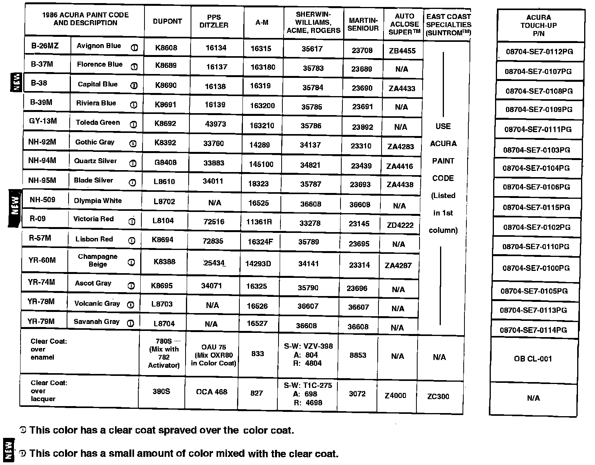

Paint Codes
September 22, 1986BULLETIN NO. 86-004
YEAR '86-88
MODEL ALL
APPLICATION ALL
1986 Acura Paint Codes (Supersedes 86-004, dated June 16, 1986)

Paint formulations are determined by each paint company. For questions regarding formulas or matching refer to your local paint jobber, distributor or the paint company's nearest regional office.
Original paint is acrylic enamel. Metallic colors have Acura Paint Codes ending in "M".